ELENCO DE VOCES

Aiko Kumiko
Es la protagonista de la serie. Una princesa oni con un gran sentido de la justicia. Su voz debe transmitir valentía pero también su inocencia de 14 años.

LINNAD_S

Takii
Takii, el adorable compañero parlanchín de Aiko, es una mezcla única de ternura y juego. Se cree el protector de la princesa y se enorgullece de su 'fuerza'.
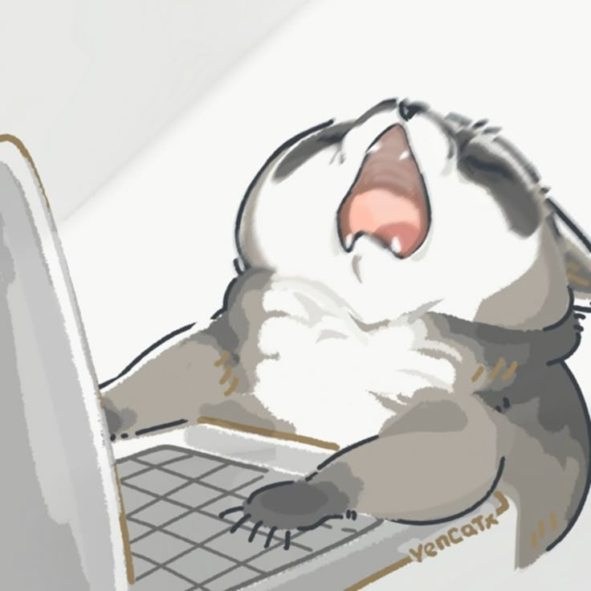
Lindsey

Steven
Un niño proveniente de otro mundo que cruza caminos con Aiko. Con su naturaleza bondadosa y gentil, se convierte en su primer amigo y en el guía esencial para que ella comprenda los misterios y las costumbres de la vida humana.
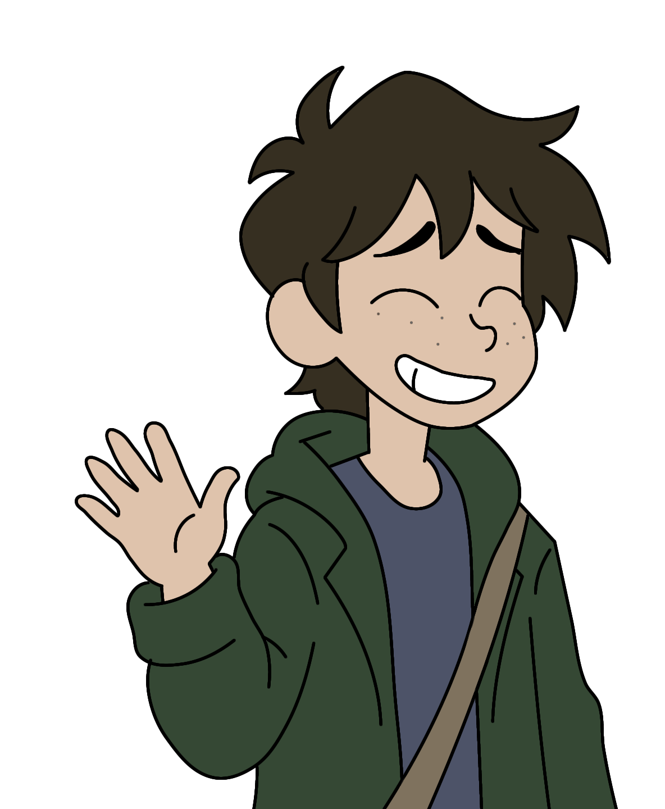
DiegoAVG
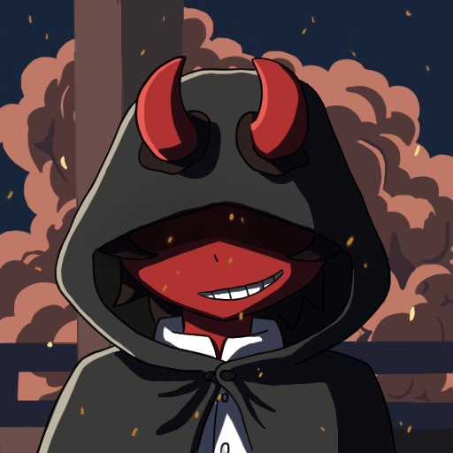
Masato
Antaño un ciudadano ejemplar y el pilar de su familia, Masato se convirtió en la sombra de lo que fue cuando la Alianza le dio la espalda en su momento de mayor necesidad. Consumido por la decepción y el deseo de justicia propia, ahora actúa como el antagonista principal.
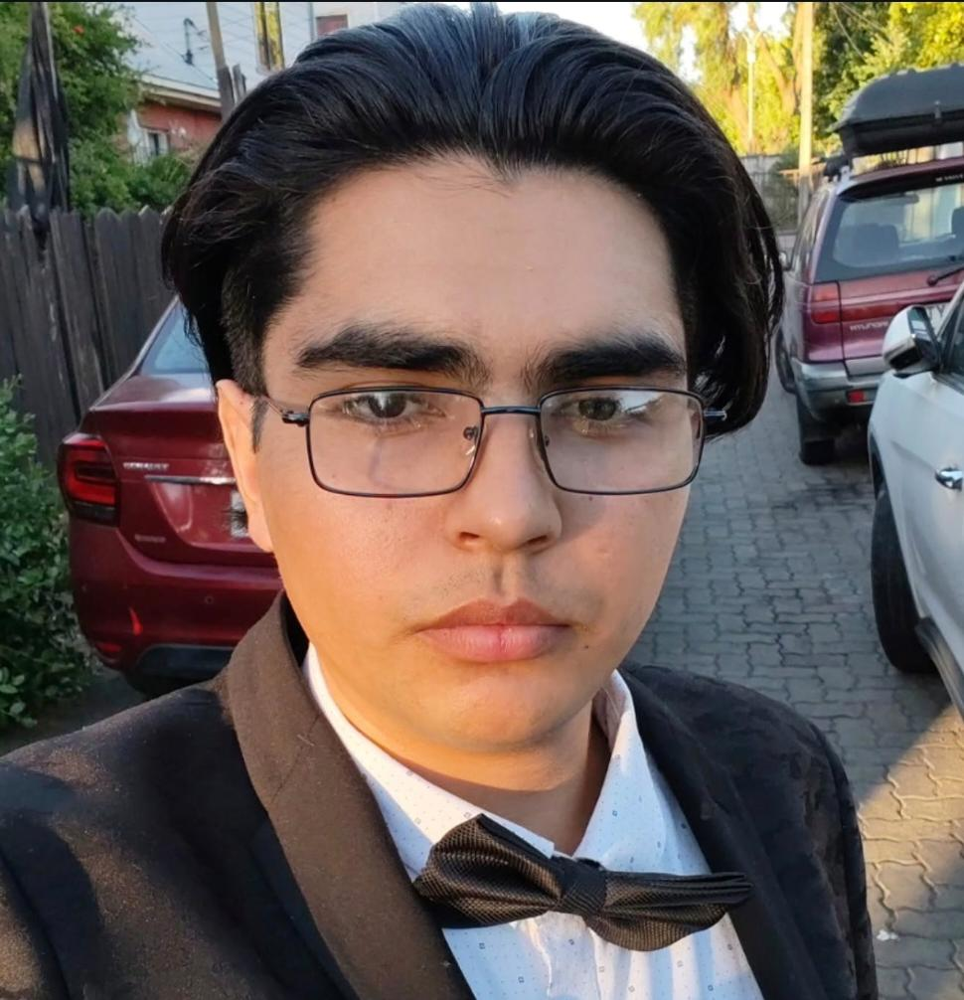
Meliastor
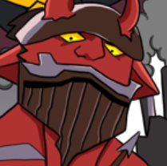
Kurogane
Tras quedar inválido en el campo de batalla, Kurogane descubrió la cara más fría de sus superiores: el abandono. Consumido por un resentimiento profundo hacia quienes alguna vez sirvió, ahora actúa bajo la convicción de que la Alianza solo ve a su gente como piezas prescindibles.

Veelkan
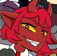
Kiyana
Mano derecha de Masato y asesina de precisión letal. Su pasado quedó marcado por la sangre al eliminar a su propio maestro para unirse a las filas enemigas. Posee un control sobrehumano de su aura, siendo capaz de ocultarla por completo para volverse invisible y golpear desde la nada. Por su extrema peligrosidad, se ha convertido en la fugitiva más buscada y temida por la Alianza.
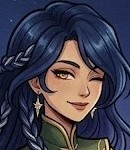
Dandy

Kiyora
Guardaespaldas de élite y protectora incondicional de Aiko. Posee un sentido de la justicia inquebrantable, pero vive atormentada por el misterio de su origen; una marca tatuada en su piel es la única pista de un pasado que no logra recordar.
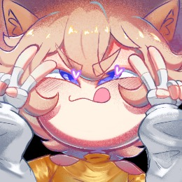
Cass
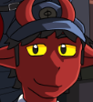
Ren
El centinela perfecto por su humildad, dedicación y entrega absoluta al deber. Ren es el amigo de la infancia de Kiyora y el miembro más humilde y cercano del grupo. Junto a ella, comparte un lazo inquebrantable de amistad y protección hacia la pequeña Aiko, siendo un pilar de confianza para todos.
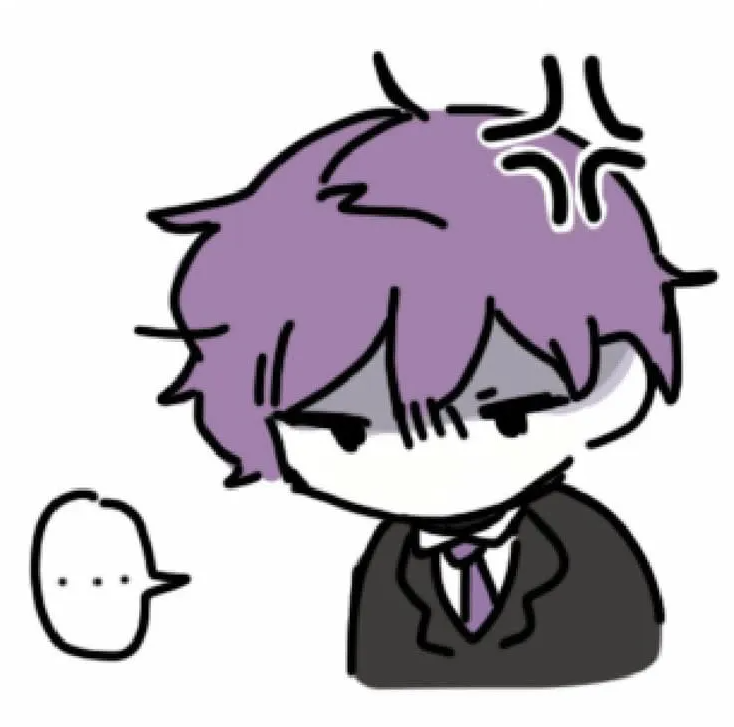
Dani west

Jenns
A sus 17 años, el resentimiento consume su corazón tras ser abandonado por la Alianza durante la caída de su ciudad. Obligado a vivir como cazarrecompensas para sobrevivir, ahora es uno de los fugitivos más buscados por aquellos que juraron protegerlo.

Miitaki
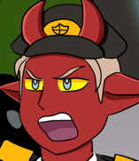
Coronel Raiketsu
Reconocido como el mejor de todos los centinelas, destaca por su inigualable habilidad en combate y un inquebrantable sentido del honor. Su único y firme objetivo es destruir las mafias restantes de Ciudad Disturbio, dando siempre lo mejor de sí en cada misión. Aunque a menudo carga con la pesada presión de la Alianza y de su propia gente, su espíritu nunca se rinde. Encuentra su mayor apoyo en su gran amiga de la infancia, la astuta Centinela Cinna.
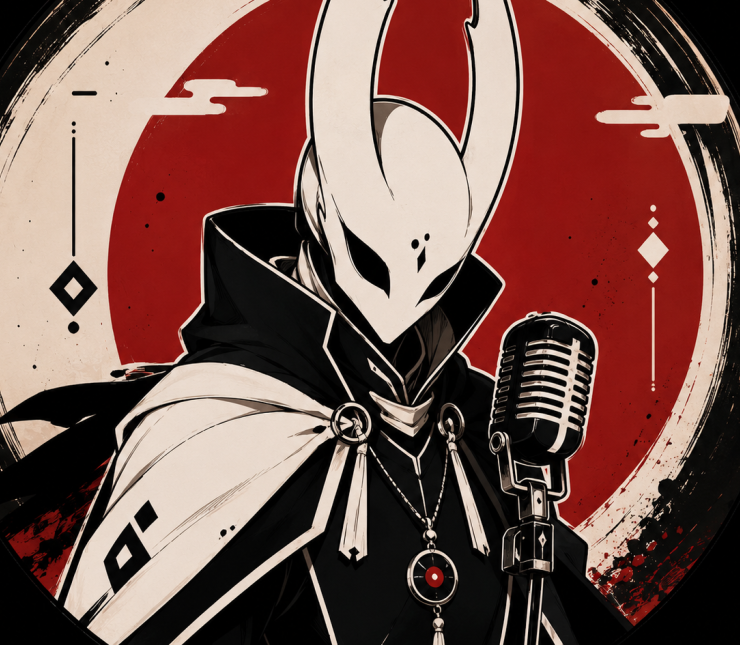
Angel21__1
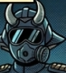
Gran Centinela
Un súper soldado modificado mediante experimentos para asegurar que nadie pierda la fe en la erradicación de la mafia. Detrás de su armadura se esconde un ser siniestro, frío y de pocas palabras; una máquina biológica que cumple cualquier orden sin dudar. Extremadamente estricto con su papel, es la encarnación de la ley ciega: cumplirá su deber sin importar el costo o la brutalidad necesaria.
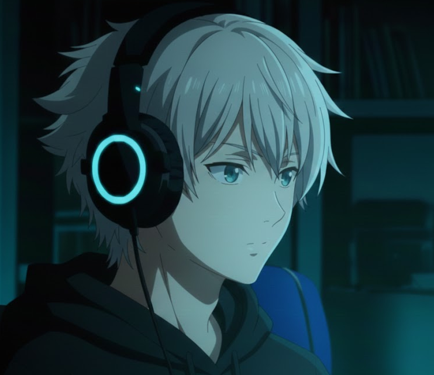
DamnatioVt
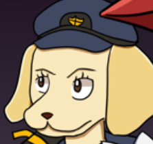
Centinela Cinna
Una centinela rebelde que prefiere operar bajo sus propias reglas, guiada por una lealtad inquebrantable a la verdadera justicia. Actuando como una espía dentro de su propia organización, utiliza su astucia para investigar a fondo los rangos militares y destapar la corrupción, coimas o cualquier irregularidad que se mueva en las sombras. Si algo huele mal en el sistema, ella será la primera en descubrirlo.
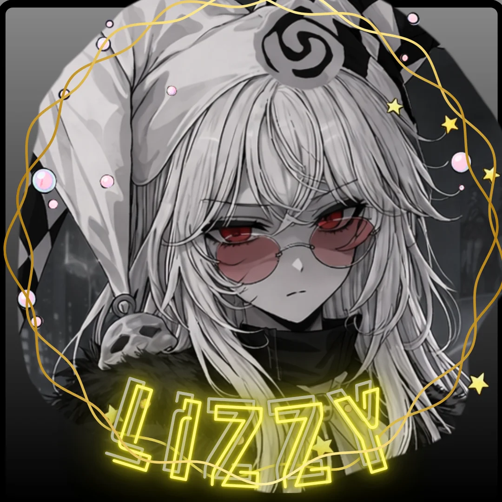
Lizzy
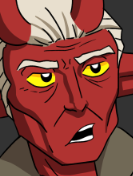
Jefe Routswell
El cascarrabias Jefe de Operaciones de la Alianza. Es un líder de mano firme que no teme aceptar daños colaterales con tal de cumplir sus objetivos. A pesar de su actitud severa, mantiene un vínculo cercano y protector con Aiko.

SrCongadonk
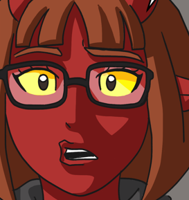
Momo
Hija del Jefe de Operaciones Routswell, Momo vive bajo la estricta y a veces asfixiante tutoría de su padre. Su relación es un campo de batalla de discusiones sobre el deber y la ética de las misiones. Valiente e intuitiva, ella sospecha que tras las órdenes de su padre se ocultan secretos que la Alianza no está lista para revelar.

Sasha
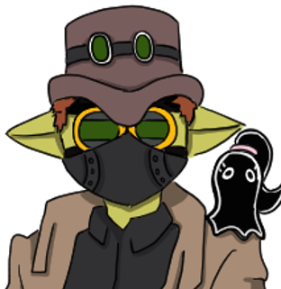
Espía Jirovit
En un mundo mucho más sombrío se mueve el Espía Jirovit, quien carga con un pasado difícil tras haber escapado de niño de un intento de trata. Durante su huida, obtuvo un poder extraordinario que le permite copiar cualquier tipo de ropa y camuflarse con el entorno, habilidades que ahora utiliza profesionalmente para infiltrarse en los lugares más peligrosos.
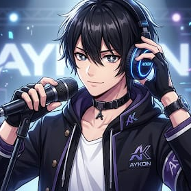
Aykon
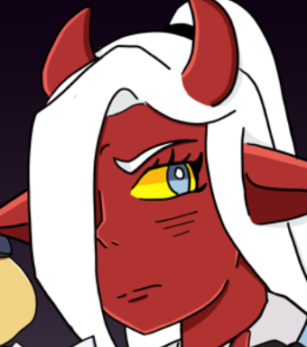
Emperatriz Emiko
Viuda del antiguo soberano y madre de Aiko, asumió el trono como una imponente hechicera y "mamá luchona". Es extremadamente sobreprotectora y está obsesionada con controlar el destino de su hija, convencida de que solo ella sabe qué es lo mejor. Esto convierte su relación en un constante campo de batalla, lleno de discusiones cada vez que Aiko intenta independizarse y tomar sus propias decisiones.
LINNAD_S
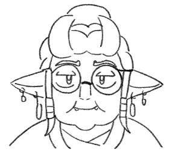
Chamán Yumiro
Próximamente..
Próximamente..
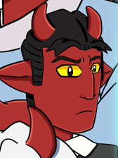
Consejero Nise
El consejero de mayor cargo y jerarquía dentro de la Alianza. Destaca por una inteligencia superior y una toma de decisiones sumamente calculadora que define el destino de la organización. Respetado por su astucia, su comportamiento reservado deja entrever que siempre va un paso por delante, ocultando segundas intenciones detrás de cada movimiento estratégico.
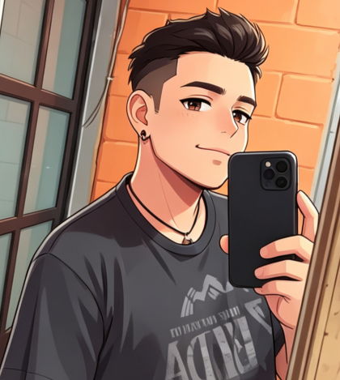
Rodrigo
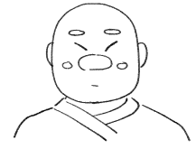
Consejero Chojiro
Próximamente..
Próximamente..
Sensei Satoshi
La mente más brillante de la Alianza. Satoshi no es solo un maestro de combate, es un estratega que entiende que la verdadera fuerza proviene del control. Su misión principal es moldear a Aiko, enseñándole que la paciencia es tan vital como el ataque y que la disciplina es el camino hacia las técnicas avanzadas que ella está destinada a dominar.
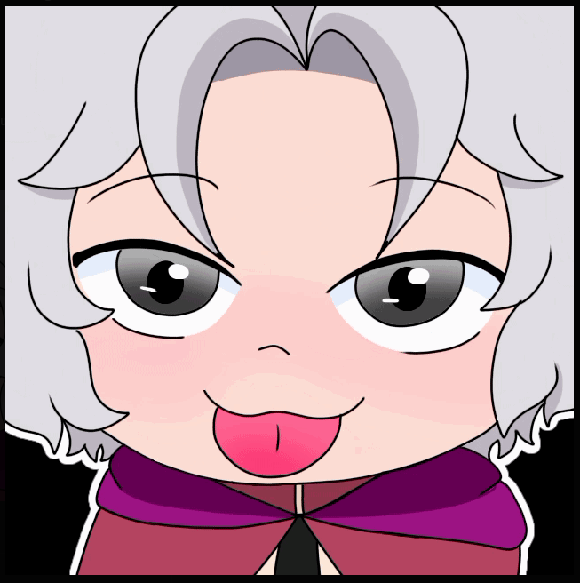
DKAY_04
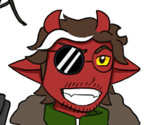
Caspian Roublast
Miembro destacado de la élite de la Alianza, forjado en las misiones más peligrosas. Mantiene una rivalidad competitiva pero leal con su mejor amigo, Satoshi, lo que lo impulsa a superar constantemente sus propios límites.
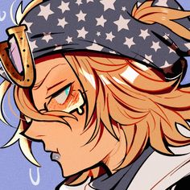
Jeff
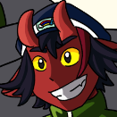
Genki
Próximamente..
Próximamente..

Takumi
Uno de los mayores expertos de la élite en el arte de la katana. Takumi no solo confía en su acero, sino en su excepcional 'Aura Perceptiva', una habilidad sensorial que le permite leer la energía del entorno y predecir los ataques enemigos antes de que ocurran. Es el filo y el escudo de su equipo.
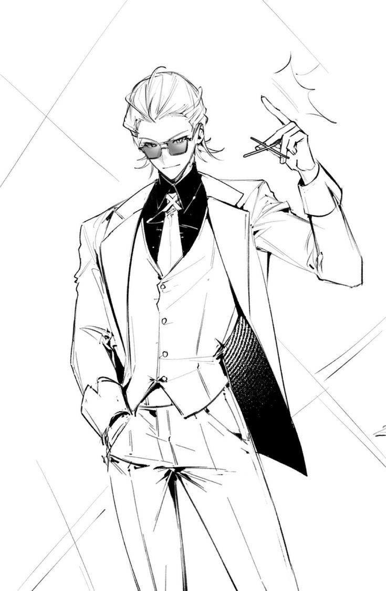
Kouh

Renjiro
Aunque su naturaleza nerviosa pueda engañar, Renjiro es la mente táctica indispensable de la élite. Fiel a las órdenes y de corazón noble, su maestría con el equipo de localización de aura y su vasto conocimiento del terreno y la fauna lo convierten en el guía perfecto. Si hay una salida, Renjiro la encontrará primero.
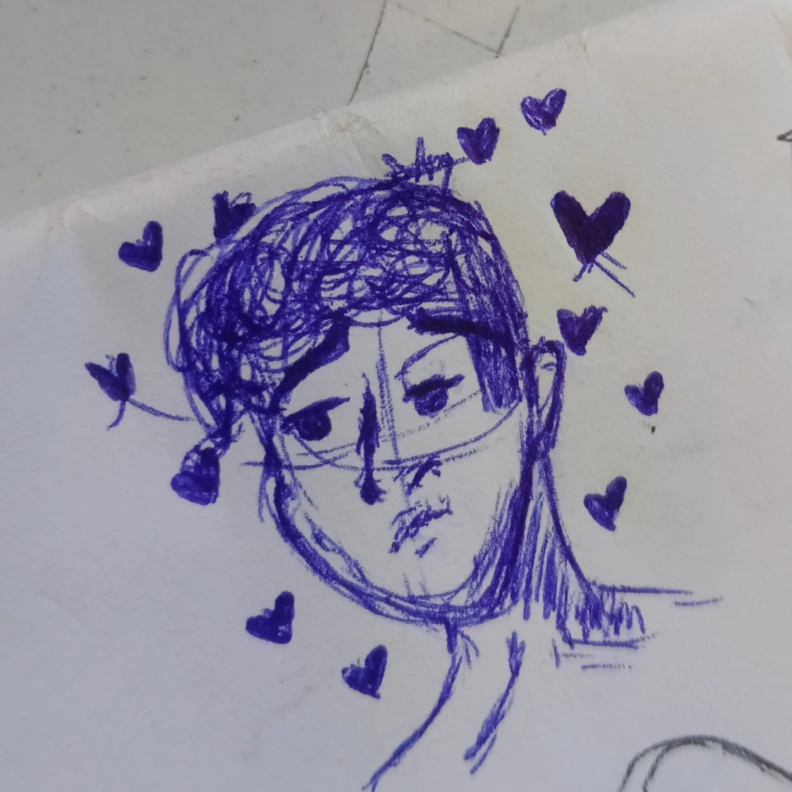
Tiago_1591
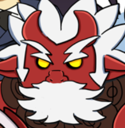
Gran Goro Bane
Considerado el guardián más fuerte de todos, es una figura seria e imponente cuya única prioridad es proteger a los suyos a toda costa. Amigo cercano de Roustwell, su vida cambió cuando el moribundo padre de Aiko le encomendó una última y sagrada misión: tomar su puesto como el nuevo líder de los guardianes. Con un peso enorme sobre sus hombros, lidera con honor, fuerza inquebrantable y un sentido del deber absoluto.
Brayum
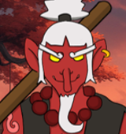
Kageyama
Próximamente..
Próximamente..
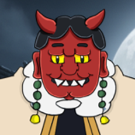
Akumaru
Próximamente..
Próximamente..
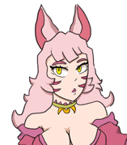
Lider Kitsuya
Reconocida como la kitsune más hermosa y futura Gran Yokai. Como líder de su clan, combina su naturaleza coqueta y divertida con un carisma magnético que hace que cualquiera caiga rendido a sus pies ante la menor provocación.
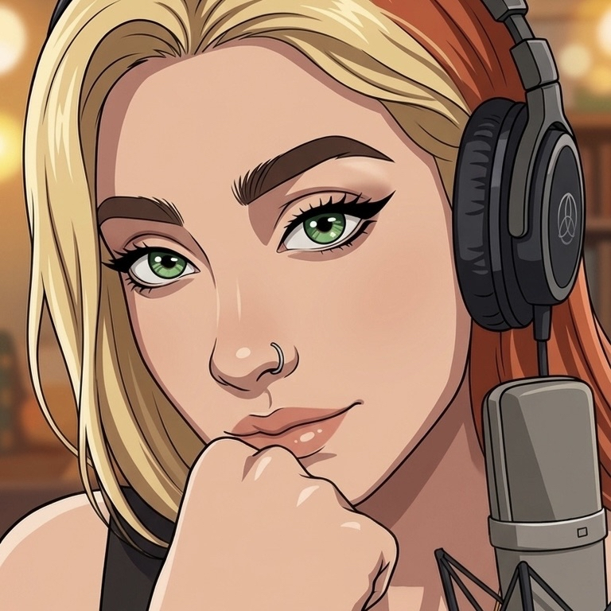
Levet
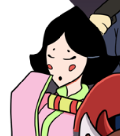
Lider Sayuri
Consagrada como la Okame más fuerte de todas, Sayuri destaca por su inmenso poder mental y su asombroso control espiritual. Posee un aura de serenidad inigualable y una voz tan suave y melodiosa que es capaz de apaciguar los corazones más caóticos, infundiendo paz absoluta y llenando de esperanza a todos aquellos que tienen la fortuna de escucharla en medio de la tormenta.
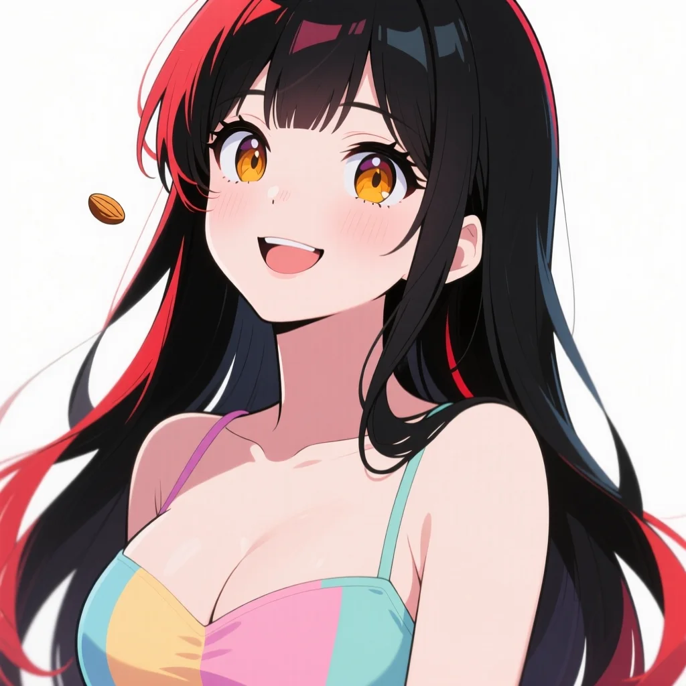
MikuStar
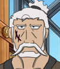
Ryuji Hagane
Próximamente..
Próximamente..

Vaelis Tyberius
Bajo la imponente armadura del soberano de la Forja, se esconde una voluntad frágil. Aunque proyecta una imagen de autoridad y temor para mantener el control, Vaelis es en realidad un hombre con el corazón de un niño asustadizo.

Tohru29
Lysandra Tyberius
Hermana de Vaelis Tyberius, posee una frialdad implacable y una letalidad absoluta en sus acciones contra todo aquel que pertenezca a la Alianza. A pesar de que considera a su hermano como alguien débil, se mantiene firmemente a su lado como la segunda al mando, dispuesta a tomar las decisiones más duras y despiadadas que él flaquea en ejecutar. Siente un profundo y marcado desprecio hacia los esclavos, gobernando con una mano de hierro implacable.
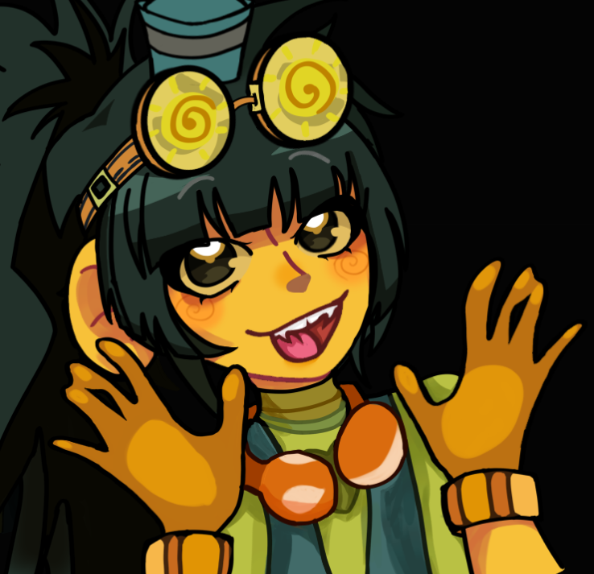
Rot
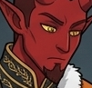
Ulfric "El Escultor"
El despiadado torturador de rehenes de la Forja Imperial y fiel servidor bajo las órdenes de Vaelis Tyberius. Detrás de su tétrica labor se esconde una intensa rivalidad con Caspian Roublast, su archienemigo definitivo. Ambos comparten un oscuro pasado marcado por un crucial encuentro en el campo de batalla que, al mismo tiempo que entrelazó sus caminos, los dividió para siempre en una enemistad inquebrantable.
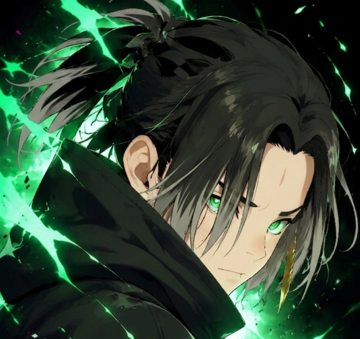
Gjack

Alaric Winterguard
Un líder cuya lealtad termina donde empieza su linaje. Alaric es la definición de egocentrismo protector; es capaz de romper cualquier tratado o alianza si eso garantiza la seguridad de su familia.
Tohru29
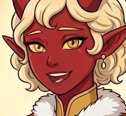
Lyra Winterguard
Próximamente..
Próximamente..
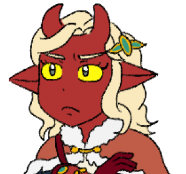
Vivienne Winterguard
Hija de Alaric Winterguard. Es una princesita tan honorable como caprichosa y tierna, que nunca se cansa de exigir más regalos. Ante la ausencia de su hermano mayor por motivos de entrenamiento, ella es quien se ha quedado al mando absoluto del castillo.
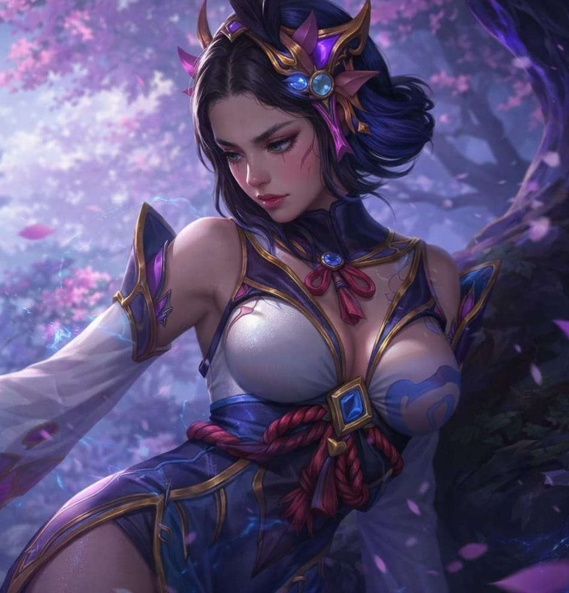
Caperu
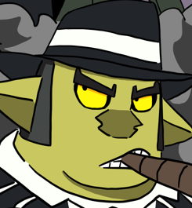
Vito Smokes
Antiguo líder de la Mesa Brava e hijo de una influyente familia millonaria de Ciudad Disturbio. Destaca por un fuerte sentido del honor y la gratitud, lo que lo llevaba a repartir de manera equitativa e igualitaria todos sus bienes y recompensas entre sus hombres.
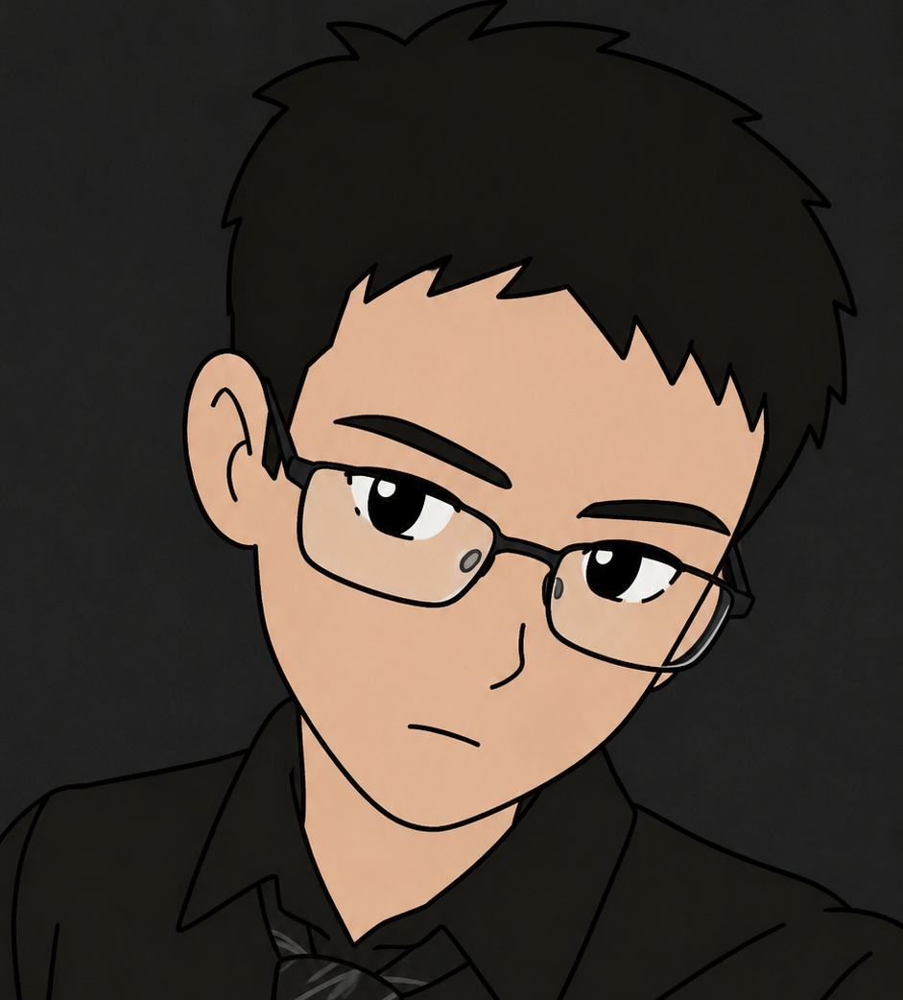
C3m
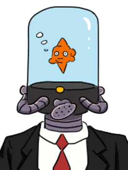
BlackFish
Un pez que obtuvo conciencia gracias a un misterioso poder. Antaño la mascota de Vito Smokes, fue criado por este como a un hermano; sin embargo, BlackFish lo traicionó para convertirse en el nuevo líder de la Mesa Brava. Desprecia la equidad de Vito, prefiriendo dar toda la recompensa únicamente al mejor.
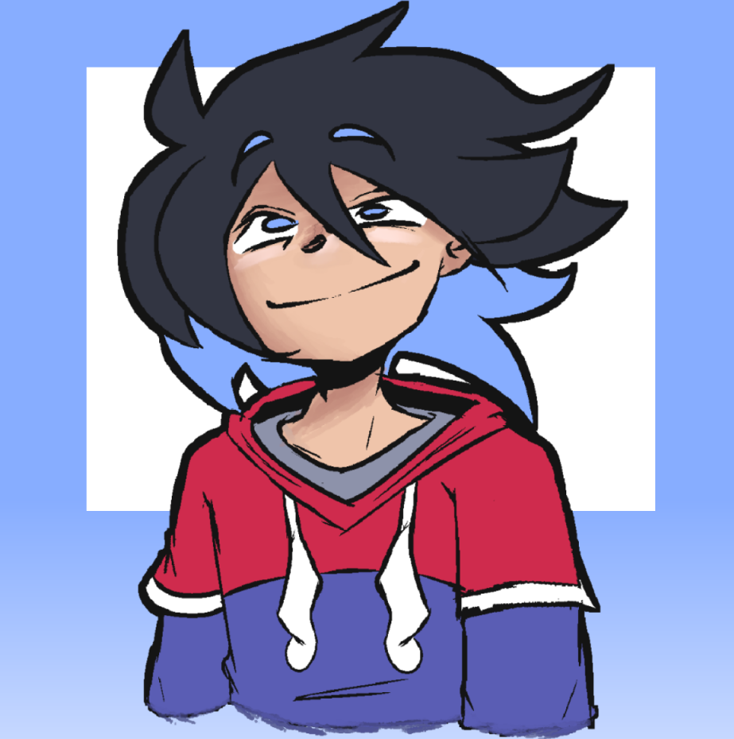
KeonKam
Zero
Un lacayo letal que sirve con devoción absoluta a Vito Smokes. Habiendo dejado atrás su pasado, carece de un nombre real y se niega por completo a recordar quién fue, enfocando toda su existencia únicamente en su presente y en la lealtad a su líder. Es un guerrero formidable que destaca por su velocidad sobrehumana y su letal destreza con la katana, convirtiéndose en un peligro silencioso.
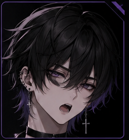
Cian
Bango Coshi
Próximamente..
Próximamente..
Klaus Warbolt
Heredero de un nombre que antes hacía temblar a naciones enteras. Tras la extinción de su clan —el más peligroso del país— a manos de un gran héroe, Klaus adoptó una actitud despreocupada y relajada que oculta sus verdaderas intenciones.

Saitama1810
Mr.Thatch
El colosal jefe mafioso y líder indiscutible de los Yokanas. Un gigante astuto que domina el arte de los pergaminos y los contratos mágicos, ofreciendo tratos engañosos donde el único beneficiado real siempre termina siendo él, atrapando a los desesperados en pactos ineludibles. Su poder e influencia son tan inmensos que actualmente mantiene bajo su yugo como esclavos a la mitad de los habitantes de Ciudad Rock In.
ROYS
Chomper
Un carismático pero peligroso tiburón que equilibra una actitud "buena onda" con una naturaleza feroz, siendo capaz de devorar a cualquiera o de jugar cruelmente con sus presas si las considera demasiado débiles. Detrás de su cariz humorístico y gracioso, se desempeña como el lacayo más servicial y segundo al mando del temido Mr. Thatch. En combate es una amenaza letal: posee dientes increíblemente afilados y una velocidad implacable que le permite embestir con una fuerza tremenda.
IMPACTO DAM
Jin Yoji
El eslabón más inestable del grupo anónimo. Jin Yoji vive en un estado de nerviosismo perpetuo, siendo el recipiente de una energía oscura cósmica que acecha desde su interior. Mientras trabaja en las sombras, Jin debe concentrar cada gramo de su voluntad para evitar que esa oscuridad total consuma su cuerpo y su cordura en cada misión.
Casper
Kakuya
La hermana gemela malvada de Kitsuya. Menospreciada desde su nacimiento por ser considerada la menos atractiva de las dos, transformó todo ese rechazo en un profundo odio. Ahora, su único motor es la venganza contra su propia hermana y la Alianza.
Yoan
Kala
Excadete principiante de la Élite y antigua amiga de Kiyora. Tras fracasar rotundamente en los exigentes exámenes de ingreso de la Élite, prefirió abandonar su camino y perderse en los oscuros callejones de Ciudad Disturbio, dedicándose ahora a realizar trabajos altamente maliciosos.
Hikaru
BS-0207
Identificado únicamente por su nombre en código debido a la ausencia de una identidad real, es el leal segundo al mando de Kala y comparte con ella una entrañable amistad. Posee un poder de naturaleza misteriosa que, según los rumores, le otorga la inquietante capacidad de copiar a la perfección el rostro de cualquier individuo. Detrás de su enigmático perfil y sus singulares habilidades, esconde un lado bastante carismático y sabe cómo dominar la pista de baile.
Shades18
W.A.L.T.E.R
Próximamente..
Próximamente..
Ryota
Líder indiscutible del escuadrón rebelde, Ryota es una figura seria y de aura malévola que infunde respeto en el campo de batalla. Calculador al extremo, ejecuta con precisión quirúrgica cada plan que su padrastro le encomienda para las misiones, cuya frialdad solo se rompe por el férreo instinto de protección que mantiene sobre sus hermanos..
AetherisSinZ
Misuki
Se desempeña como la segunda al mando del escuadrón rebelde, ocupando el rango inmediatamente inferior al de su hermano, Ryota. Se distingue por una personalidad marcadamente arrogante y una confianza absoluta en su propio poder, el cual demuestra siempre que tiene oportunidad junto a su inseparable mazo de combate, bautizado como "Aiko".
Jacki_taki
Akira
El hermano del medio del escuadrón rebelde. Aunque su deber principal es obedecer las estrictas órdenes de Ryota, su espíritu independiente lo lleva a tomar las riendas de las misiones para resolverlas a su propio estilo. Es un chico excepcionalmente talentoso con el dominio de múltiples técnicas de combate, lo que le da la confianza para desafiar la autoridad de su hermano mayor, desatando constantes roces y peleas entre ambos por el control táctico.
JyroniCus
Miyui
La consentida de Masato y hermana de sangre de Ryota, ambos adoptados por su padrastro. Por lo general es una chica dulce, enamoradiza e intensa; sin embargo, bajo esa fachada tierna se esconde un peligroso temperamento. Cuando se enoja, no duda en desatar su furia utilizando sus letales tijeras para cortar a cualquiera que se atreva a hacerle daño a ella o a los suyos.
Noah_Sanders04
Yuo
Considerado el estudiante más brillante de la Academia Log-Tech, este joven genio fue moldeado bajo la tutela del legendario Dr. Varkos. Mientras él aporta la estrategia y la tecnología, su hermana Yui pone la fuerza bruta, formando un dúo táctico imparable.
Archivaz
Yui
La facción destructiva y letal de los gemelos. Amante de la lectura tanto como de las explosiones y el fuego, Yui nunca se separa de su hermano Yuo. Juntos, son una fuerza caótica que convierte cualquier misión en una locura inolvidable.

NoBody
Yhara y Nhara
Dos hermanas esclavas de la Forja Imperial cuya rutina dio un giro drástico el día en que, junto a su madre, fueron seleccionadas para servir directamente al despiadado soberano Vaelis Tyberius. Atrapadas en un entorno hostil y de constante peligro, ambas se ven obligadas a luchar diariamente por su supervivencia, uniendo sus fuerzas para no sucumbir ante las crueles e implacables órdenes dictadas por los hombres a cargo de Vaelis.
Gelatina

General Lashiro
Militar de alto rango con una trayectoria implacable. Especialista en liderar misiones de alto riesgo, Lashiro dedica su vida a la formación y capacitación de los reclutas de élite, siendo un pilar fundamental en la defensa de su nación.
Meme
General Hedy
Una brillante militar de alto rango que combina un intelecto estratégico superior con una personalidad notablemente tímida y reservada. Al igual que el General Lashiro, Hedy se desempeña con orgullo como profesora, guiando e instruyendo a sus propios estudiantes en el arte de la estrategia; asimismo, asume la gran responsabilidad de liderar las misiones especiales de alta prioridad que le son encomendadas gracias a su impecable historial.
Val

Senadora Merit
Representante política del País del Sol. Como diplomática clave, trabaja incansablemente para mantener los lazos de fraternidad y la alianza estratégica con el País Flor de Cerezo, velando por la paz entre ambas naciones.

Sofi
Beryl
Una joven entusiasta con una pasión inagotable por el periodismo. Siempre armada con su cámara, busca capturar los últimos avances tecnológicos; fue precisamente en su labor informativa donde conoció a Masato.

Cris
Kaito
Un novicio excepcionalmente talentoso en el dominio de la katana, cuyo destino quedó marcado por la tragedia tras perder a su hermano en el pasado, luego de que una excursión de niños novicios resultara en una misteriosa desaparición masiva. Impulsado por la esperanza, Kaito recorre el mundo con el único objetivo de encontrar su rastro, viéndose obligado a lidiar y combatir en su camino contra algunos de los mafiosos más peligrosos y famosos del entorno.
UryTga
Lunara
Una novicia sumamente talentosa en las artes mágicas. A pesar de su rango, suele comandar misiones de alta clase junto a miembros de la Élite gracias a su extraordinario poder. Su arma principal es un bastón místico de gran magnitud, capaz de invocar un pequeño pero devastador agujero negro en combate.
Aitana
Roxie
Una chica muy ruda, sumamente activa y lista, cuya gran pasión es el estilo de pelea cuerpo a cuerpo. Su habilidad especial le permite incrementar su tamaño hasta hacerse gigante; sin embargo, tiene la limitación de no poder encogerse más allá de su estatura normal.
Alis
Diva Modas
La estilista oficial de la prestigiosa familia Kumiko. Ella siente una profunda pasión por su oficio y dedica su talento principalmente a apoyar a la Princesa AIKO, encargándose de que cada detalle de su vestimenta sea impecable.
Just Gastón
Dr.Varkos
Reconocido como el goblin más inteligente del mundo, el Dr. Varkos fue en el pasado un gran amigo del jefe Roustwell, hasta que irreconciliables diferencias ideológicas los distanciaron para siempre. Tras marcharse, se instaló en la avanzada Ciudad Log Tech, lugar donde ahora desarrolla retorcidos experimentos malvados con el único fin de vendérselos a los criminales más peligrosos que existen. En su misterioso pasado como mentor, destacan sus antiguos estudiantes, Yuo y Yui.
Rodrigo
Centinela Hachi
El compañero de alto mando en quien siempre puedes confiar. Detrás de su porte elegante y su lealtad inquebrantable, es un gran amigo que disfruta jugar con sus amiguitos peludos. Sin embargo, no te dejes engañar por su tamaño actual: ¡cuando se enoja, se transforma en una bestia gigante capaz de hacer temblar la tierra! ¡Guau guau!
Sasha
Goblins-1
goblins xd jiji
Dkhay
Misha Luv
La adorable criatura de soporte médico del Sensei Satoshi. Fiel e inseparable, acompaña a su maestro en cada una de sus peligrosas misiones con el único y vital propósito de curar de inmediato cualquier herida que este pueda sufrir en el campo de batalla.
Aiko